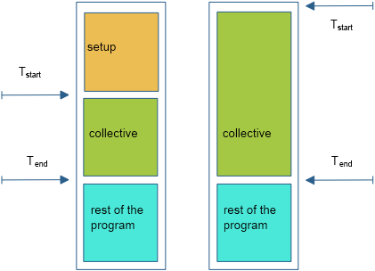
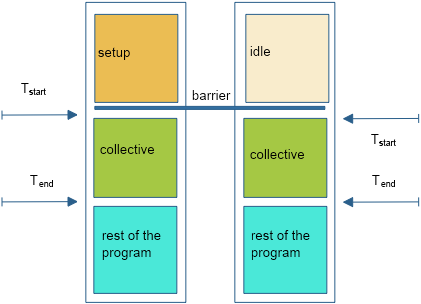
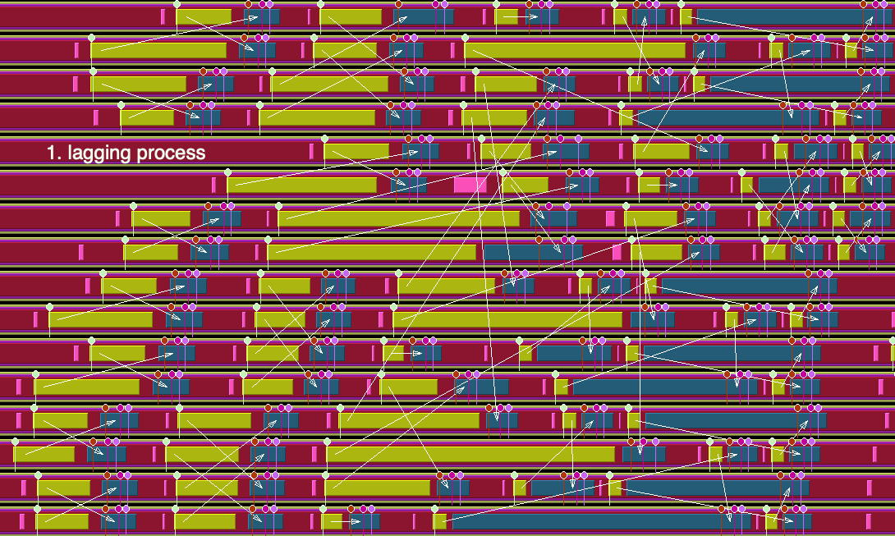
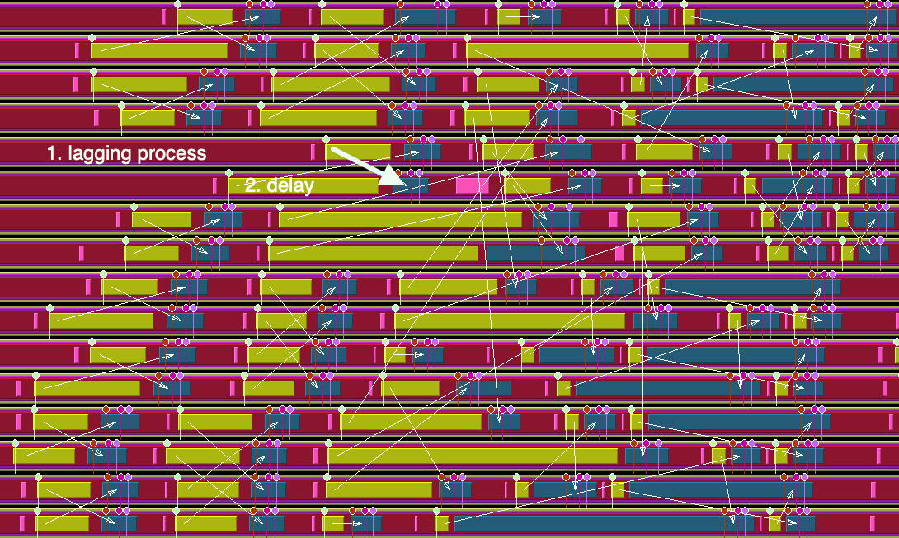
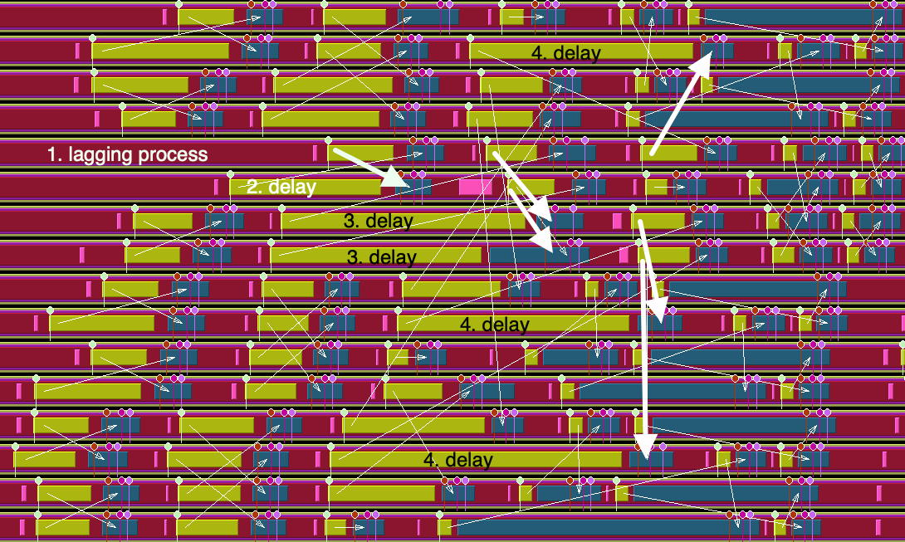

crumb trail: > tracing > Timing
Many systems have their own timers:
crumb trail: > tracing > Timing > Parallel timing
Timing parallel operations is fraught with peril, as processes or threads can interact with each other. This means that you may be measuring the wait time induced by synchronization. Sometimes that is actually what you want, as in the case of a ping-pong operation; section~ 4.1.1 .
Other times, this is not what you want. Consider the code
if (procno==0) do_big_setup(); t = timer(); mpi_some_collective(); duration = timer() - t;
\hbox\bgroup   \egroup
FIGURE 50.1: Timing a parallel code without and with barrier
Figure 50.1 illustrates this:
On the non-zero processes we now get a time measurement, which we intended to be just the collective operation, that includes the setup time of process zero.
The solution is to put a barrier around the section that you want to time; see again figure 50.1 .
TAU~ http://www.cs.uoregon.edu/Research/tau/home.php is a utility for profiling and tracing your parallel programs. Profiling is the gathering and displaying of bulk statistics, for instance showing you which routines take the most time, or whether communication takes a large portion of your runtime. When you get concerned about performance, a good profiling tool is indispensible.
Tracing is the construction and displaying of time-dependent information on your program run, for instance showing you if one process lags behind others. For understanding a program's behaviour, and the reasons behind profiling statistics, a tracing tool can be very insightful.
crumb trail: > tracing > Tau > Instrumentation
Unlike such tools as VTune which profile your binary as-is, TAU works by adding instrumentation to your code: in effect it is a source-to-source translator that takes your code and turns it into one that generates run-time statistics.
This instrumentation is largely done for you; you mostly need to recompile your code with a script that does the source-to-source translation, and subsequently compiles that instrumented code. You could for instance have the following in your makefile:
ifdef TACC_TAU_DIR
CC = tau_cc.sh
else
CC = mpicc
endif
% : %.c
<TAB>${CC} -o $@ $^
If TAU is to be used (which we detect here by checking for the environment variable TACC_TAU_DIR ), we define the CC variable as one of the TAU compilation scripts; otherwise we set it to a regular MPI compiler.
\begin{istc} To use TAU on TACC resources, do module load tau . \end{istc}
crumb trail: > tracing > Tau > Running
You can now run your instrumented code; trace/profile output will be written to file if environment variables TAU_PROFILE and/or TAU_TRACE are set:
export TAU_PROFILE=1 export TAU_TRACE=1
A TAU run can generate many files: typically at least one per process. It is therefore advisabe to create a directory for your tracing and profiling information. You declare them to TAU by setting the environment variables PROFILEDIR and TRACEDIR .
mkdir tau_trace mkdir tau_profile export PROFILEDIR=tau_profile export TRACEDIR=tau_trace
The actual program invocation is then unchanged:
mpirun -np 26 myprogram
At TACC, use ibrun without a processor count; the count is derived from the queue submission parameters.
While this example uses two separate directories, there is no harm in using the same for both.
crumb trail: > tracing > Tau > Output
The tracing/profiling information is spread over many files, and hard to read as such. Therefore, you need some further programs to consolidate and display the information.
You view profiling information with paraprof
paraprof tau_profile
Viewing the traces takes a few steps:
cd tau_trace rm -f tau.trc tau.edf align.trc align.edf tau_treemerge.pl tau_timecorrect tau.trc tau.edf align.trc align.edf tau2slog2 align.trc align.edf -o yourprogram.slog2
If you skip the tau_timecorrect step, you can generate the slog2 file by:
tau2slog2 tau.trc tau.edf -o yourprogram.slog2
The slog2 file can be viewed with jumpshot :
jumpshot yourprogram.slog2
crumb trail: > tracing > Tau > Examples
crumb trail: > tracing > Tau > Examples > Bucket brigade
Let's consider a bucket brigade implementation of a broadcast: each process sends its data to the next higher rank.
int sendto =
( procno<nprocs-1 ? procno+1 : MPI_PROC_NULL )
;
int recvfrom =
( procno>0 ? procno-1 : MPI_PROC_NULL )
;
MPI_Recv( leftdata,1,MPI_DOUBLE,recvfrom,0,comm,MPI_STATUS_IGNORE);
myvalue = leftdata
MPI_Send( myvalue,1,MPI_DOUBLE,sendto,0,comm);
We implement the bucket brigade with blocking sends and receives: each process waits to receive from its predecessor, before sending to its successor.
// bucketblock.c for (int i=0; i<N; i++) myvalue[i] = (procno+1)*(procno+1) + leftdata[i]; MPI_Send( myvalue,N,MPI_DOUBLE,sendto,0,comm);
FIGURE 50.2: Trace of a bucket brigade broadcast
The TAU trace of this is in figure 50.2 , using 4 nodes of 4 ranks each. We see that the processes within each node are fairly well synchronized, but there is less synchronization between the nodes. However, the bucket brigade then imposes its own synchronization on the processes because each has to wait for its predecessor, no matter if it posted the receive operation early.
Next, we introduce pipelining into this operation: each send is broken up into parts, and these parts are sent and received with non-blocking calls.
// bucketpipenonblock.c
MPI_Request rrequests[PARTS];
for (int ipart=0; ipart<PARTS; ipart++) {
MPI_Irecv
(
leftdata+partition_starts[ipart],partition_sizes[ipart],
MPI_DOUBLE,recvfrom,ipart,comm,rrequests+ipart);
}
FIGURE 50.3: Trace of a pipelined bucket brigade broadcast
The TAU trace is in figure 50.3 .
crumb trail: > tracing > Tau > Examples > Butterfly exchange
FIGURE 50.4: Trace of a butterfly exchange
FIGURE 50.5: Trace of a butterfly exchange
The NAS Parallel Benchmark suite [nas-website] contains a CG implementation that spells out its all-reduce operations as a butterfly exchange .
!! cgb.f
do i = 1, l2npcols
call mpi_irecv( d,
> 1,
> dp_type,
> reduce_exch_proc(i),
> i,
> mpi_comm_world,
> request,
> ierr )
call mpi_send( sum,
> 1,
> dp_type,
> reduce_exch_proc(i),
> i,
> mpi_comm_world,
> ierr )
call mpi_wait( request, status, ierr )
sum = sum + d
enddo
\vskip\baselineskip  \vskip\baselineskip 
FIGURE 50.6: Four stages of processes waiting caused by a single lagging process
\vskip\baselineskip 
FIGURE 50.7: Four stages of processes waiting caused by a single lagging process
We recognize this structure in the TAU trace: figure 50.4 . Upon closer examination, we see how this particular algorithm induces a lot of wait time. Figures 50.6 and 50.7 show a whole cascade of processes waiting for each other. 50.5 .